Core · Video walkthrough
Prepare and review an onboarding import
Review an existing two-group workspace, its files, mappings, proposed configuration, write mode and activation requirements before applying changes.
Before you begin
- Use the isolated fictional department and its existing Academy CSV Practice workspace.
- Use department import-management access and public fictional source data.
- This bounded recording uses an already-uploaded CSV. Applying the import, second-factor enrollment and member invitations are outside its scope.
Chapters
- Choose the right workspace
- Separate ready rows from imported results
- Review the uploaded data and source terminology
- Choose a supplied data layout
- Review the destination and field meaning
- Inspect organizational relationships
- Read the scope of issue checking
- Review proposed configuration separately
- Read the proposed additions
- Check the handling of existing records
- Recognize the approval requirements
- Read check history and activation separately
- Start with a small understood file
Watch the walkthrough
Step 1
Choose the right workspace
Import and Migration gives administrators a place to review external data before saving it into Resgrid. The existing Academy CSV Practice workspace is Reviewing, with Add to a live department as its mode. The separate Start an import form explains the choice between a new department and one already working. Use Resume for an existing workspace so its files and decisions stay together.

Practice
Identify the existing Reviewing workspace and its mode. Explain when to use Resume rather than start a separate import.
Step 2
Separate ready rows from imported results
Overview separates preparation from results. This fictional workspace has two Rows checked, two Ready to import, zero Imported and zero People to invite. Its progress list still has later work to do. Use these counts to understand what has happened before deciding the next step. A ready data set has passed its current checks; those rows have not yet been added to the department.
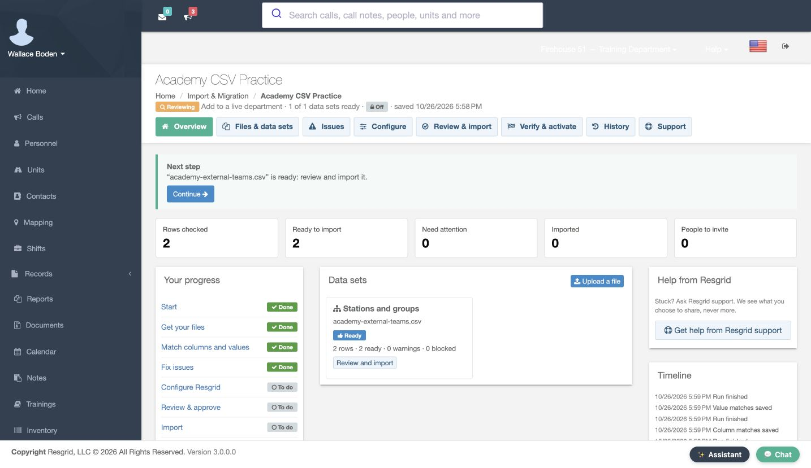
Practice
Read Rows checked, Ready to import, Imported and People to invite together. Explain why two ready rows with zero imported rows have not changed the department.
Step 3
Review the uploaded data and source terminology
Open Files and data sets. Upload a file accepts formats such as CSV, Excel and JSON. The existing training CSV is listed as Stations and groups with two ready rows. On the right, D4H Team Manager supplies terminology context. Selecting a source product helps explain names; Resgrid still reads and matches the uploaded file. Expand Glossary to compare In D4H Team Manager with In Resgrid. Members correspond to People, and Groups correspond to Stations and groups. Equipment is marked Inventory, not imported. Incidents is marked Calls, not imported. Read those limits when planning a migration. A familiar product name or suggested label does not mean every kind of historical data will be transferred.
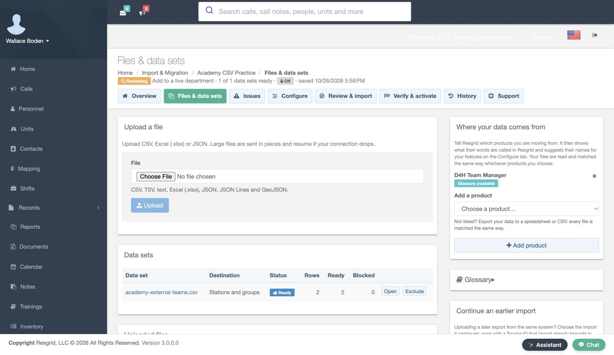
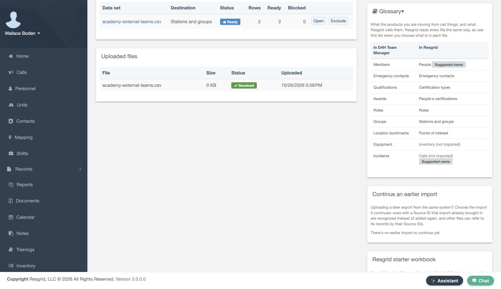
Practice
Locate the existing training CSV and its Stations and groups destination. Compare the source glossary with the supported imported data before planning a migration.
Step 4
Choose a supplied data layout
The Resgrid starter workbook offers a sheet for each kind of data, with example rows and choices based on the department. Visible options include Statuses, Certification types, Stations and groups, and Roles. Choose a scope that matches the data being prepared. Farther down, Download workbook provides the selected layout. Individual CSV templates are available for Stations and groups, People and Units. Download current data provides existing department data in the same layout for review and editing. These are the actual download controls; this lesson reviews them without claiming a new downloaded or reimported file.
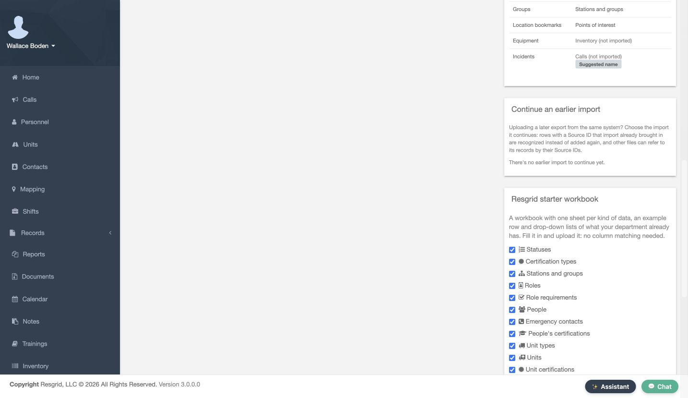
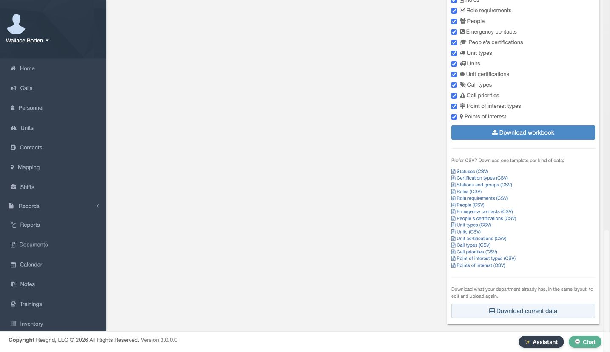
Practice
Find the workbook and CSV template controls. Choose the layout you would prepare; this exercise does not require downloading or uploading a new file.
Step 5
Review the destination and field meaning
Open the training data set and review Match columns. Its destination is Stations and groups. TeamName maps to Name, and TeamCategory maps to Type. Check the sample values and ask whether they mean the same thing in the destination. Keep the columns the department needs, rather than treating a confident suggestion as the final decision. StationLatitude and StationLongitude show paired numeric samples for the training location. Review them together. Same value for every row is a separate option for a shared value when the file has no suitable column. Its visible address fields remain blank. A shared default should describe the whole data set, rather than assigning one site's details to unrelated teams.
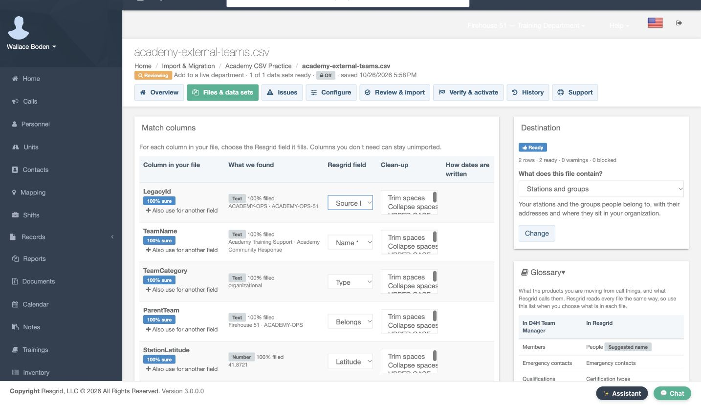
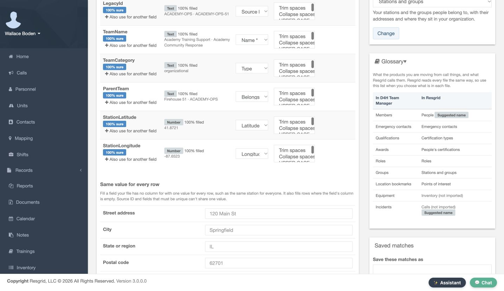
Practice
Compare TeamName and TeamCategory samples with the visible Name and Type destinations. Review the paired coordinate samples and distinguish placeholders from entered shared defaults.
Step 6
Inspect organizational relationships
Match values, Belongs to, makes the proposed hierarchy easier to inspect. Firehouse 51 is selected for one value. The in-file Academy Ops reference remains Not decided on this page. Check each relationship against the intended organization before using Save choices. This recording reviews the current choices; it does not resolve or save the undecided reference. Both the names and the resulting hierarchy matter.
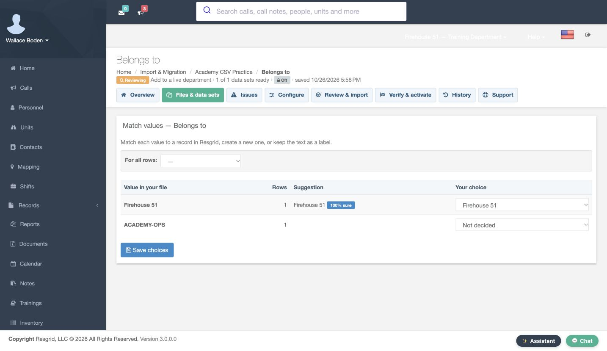
Practice
Read Firehouse 51 and the undecided Academy Ops reference. Describe the intended hierarchy before making or saving any new choice.
Step 7
Read the scope of issue checking
Open Issues and confirm the selected scope. All data sets is selected, and the page currently reports No issues. Show resolved issues is available for earlier corrections. This is the status of the checks for this workspace. The destination, relationship and change-preview reviews still matter. Here no issue is corrected and no import is committed.
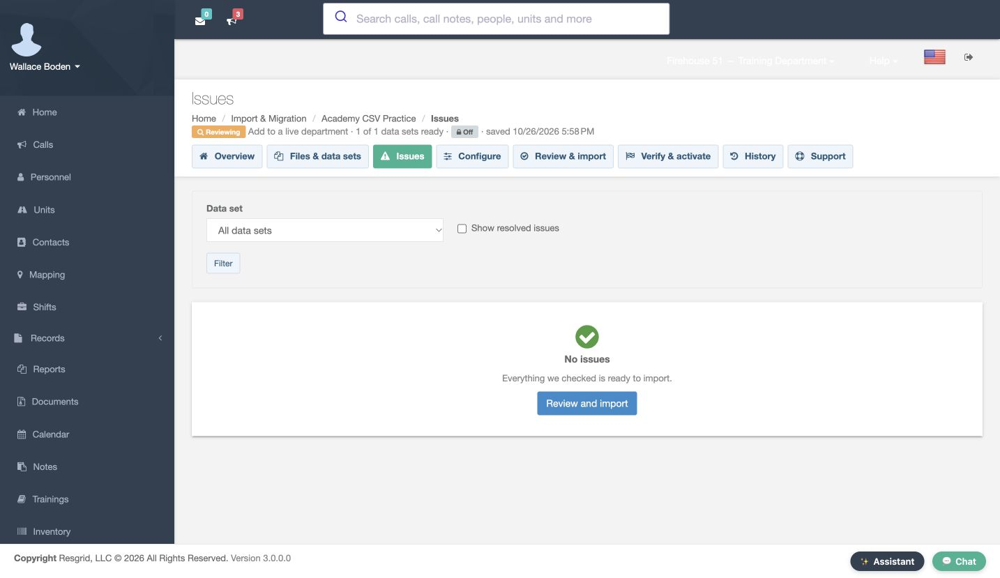
Practice
Identify the All data sets scope and current No issues result. Explain why that check does not establish a completed import.
Step 8
Review proposed configuration separately
Configure shows proposed department settings alongside the imported data. Will be changed is zero, and Waiting for your decision is two. Names contains the suggestions in this example. Review them before using Accept all suggestions, because configuration can affect the words members see across the department. The proposals rename Calls to Incidents and Personnel to Members. Accept and Decline let an administrator decide each one. Both still have Suggested status. These terminology changes do not import incident history, create people, or establish who has joined. Useful names should reflect how a community response team, search-and-rescue organization or security company actually works.
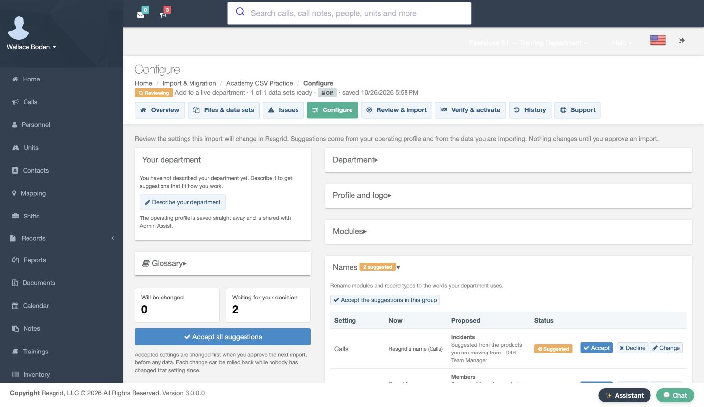
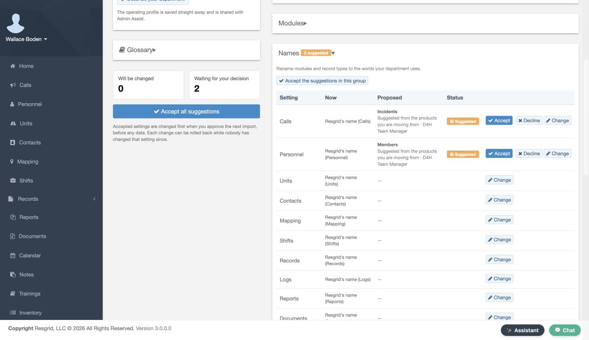
Practice
Compare the proposed Incidents and Members names with the current Calls and Personnel names. Leave the suggestions unaccepted while reviewing their meaning.
Step 9
Read the proposed additions
Review and import summarizes the proposed write. Add is two. Update or link, Unchanged, Invite to join and Blocked are zero. The data-set row identifies Stations and groups and the training file, connecting the totals to their source. The large What will happen area is blank in this layout; use the visible counts and table. These remain proposed changes.
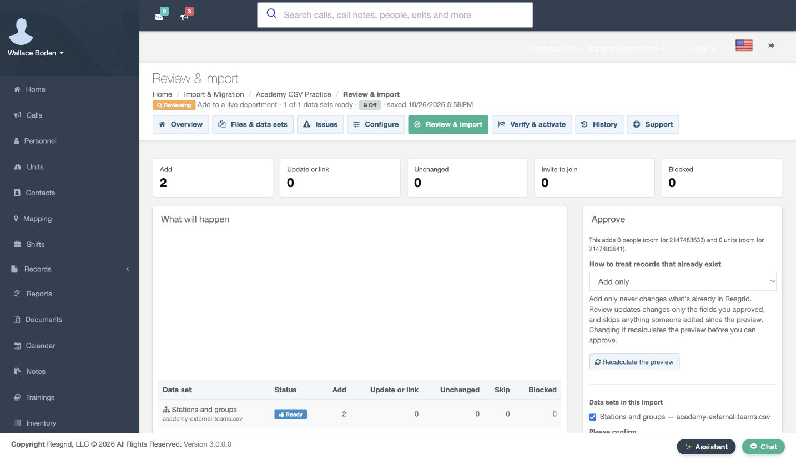
Practice
Read the proposed Add count and the Stations and groups data-set row. Use the table and counts while the What will happen area is blank.
Step 10
Check the handling of existing records
How to treat records that already exist is set to Add only. The explanation says this mode never changes existing Resgrid records. It also explains that reviewed updates change approved fields and skip records edited since the preview. Recalculate the preview is available after a change. Check Data sets in this import so the mode and included files agree with the intended work. This example leaves Add only unchanged.
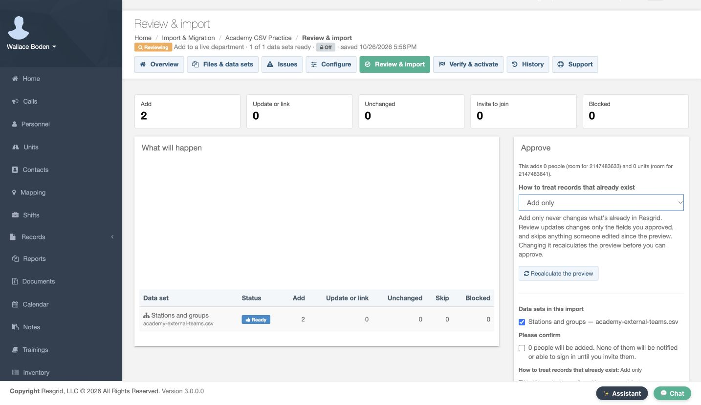
Practice
Read Add only and its explanation. Check the included data set without changing the write mode or recalculating this recorded example.
Step 11
Recognize the approval requirements
Please confirm states that zero people will be added, and imported people cannot sign in or receive notifications until invited. The checkbox remains unchecked. The page also says approval requires confirmation with your second factor. Approve and import crosses from review into applying changes. This lesson stops its approval demonstration at those visible requirements. It does not approve this workspace or enroll a factor.
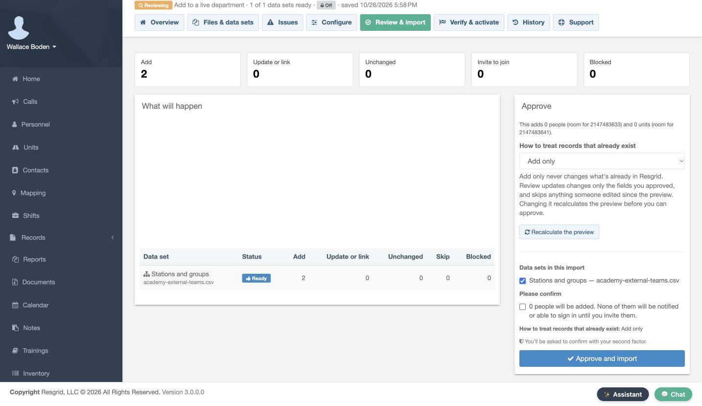
Practice
Locate the unchecked confirmation, zero-person explanation and second-factor requirement. Stop at review; this exercise does not approve the import or enroll a factor.
Step 12
Read check history and activation separately
Open History and read Run and Status together. The three retained runs are File check, each marked Done. They establish completed file checks, not a completed import. The generic background-work message below the table does not identify another successful operation. Verify and activate separates People imported, Invited and Signed in. All are zero, and Invitations says No invitations yet. The Activation checklist still requires reviewing results and signing off. Sign off and go live is disabled. Done beside an empty invitation step does not show that anybody received an invitation or signed in. Plan result verification and member activation as distinct work after the import.
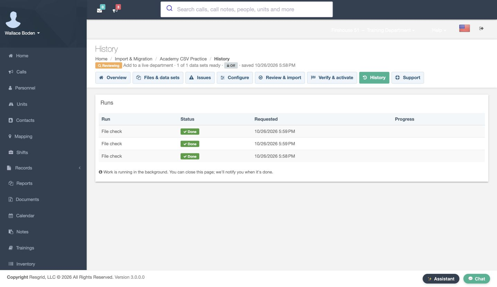
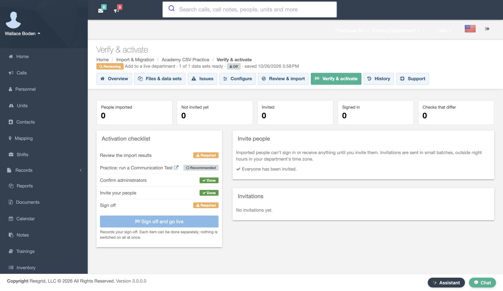
Practice
Distinguish completed File check runs from an import commit. Read the zero invitation/sign-in counts and disabled sign-off before claiming activation.
Step 13
Start with a small understood file
Return to Overview: two rows ready, zero imported and zero people to invite. This is a review of an existing preparation workspace, not a completed migration. Fire departments can start with station data. Community care and mental-health teams can review operational groups without clinical histories. Search-and-rescue groups can check volunteer organization; security companies can review site groups; wildland contractors can plan seasonal teams; industrial responders can review facility groups. Begin with a small understood file, verify its meaning, and use the proposed counts to guide the next authorized step.
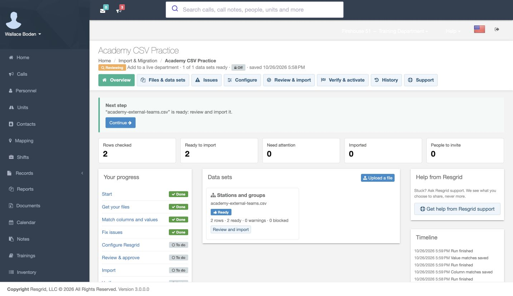
Practice
Choose a small fictional stations-and-groups file relevant to your department. State the intended mapping, review the proposed changes, and identify the remaining approval work before applying data.
Examples for your department
- Fire / EMS
- Chicago Fire training: import fictional stations, engine types, units and a member with stable source IDs.
- Community response
- Mobile crisis teams: import team and personnel metadata, excluding private clinical notes and visit narratives.
- Search and rescue
- Search and rescue: review team, role and certification references before importing volunteer rosters.
- Security
- Security: distinguish client sites, patrol units and member groups when mapping external exports.
- Wildland
- Wildland contractors: use additive seasonal roster imports and review existing-member matches carefully.
- Industrial
- Industrial response: import facility teams and equipment types while reviewing qualifications and permissions separately.
Transcript
Download transcriptRead the complete transcript
Prepare and review an onboarding import Audience: Department administrators preparing external data Choose the right workspace Import and Migration gives administrators a place to review external data before saving it into Resgrid. The existing Academy CSV Practice workspace is Reviewing, with Add to a live department as its mode. The separate Start an import form explains the choice between a new department and one already working. Use Resume for an existing workspace so its files and decisions stay together. Practice: Identify the existing Reviewing workspace and its mode. Explain when to use Resume rather than start a separate import. Separate ready rows from imported results Overview separates preparation from results. This fictional workspace has two Rows checked, two Ready to import, zero Imported and zero People to invite. Its progress list still has later work to do. Use these counts to understand what has happened before deciding the next step. A ready data set has passed its current checks; those rows have not yet been added to the department. Practice: Read Rows checked, Ready to import, Imported and People to invite together. Explain why two ready rows with zero imported rows have not changed the department. Review the uploaded data and source terminology Open Files and data sets. Upload a file accepts formats such as CSV, Excel and JSON. The existing training CSV is listed as Stations and groups with two ready rows. On the right, D4H Team Manager supplies terminology context. Selecting a source product helps explain names; Resgrid still reads and matches the uploaded file. Expand Glossary to compare In D4H Team Manager with In Resgrid. Members correspond to People, and Groups correspond to Stations and groups. Equipment is marked Inventory, not imported. Incidents is marked Calls, not imported. Read those limits when planning a migration. A familiar product name or suggested label does not mean every kind of historical data will be transferred. Practice: Locate the existing training CSV and its Stations and groups destination. Compare the source glossary with the supported imported data before planning a migration. Choose a supplied data layout The Resgrid starter workbook offers a sheet for each kind of data, with example rows and choices based on the department. Visible options include Statuses, Certification types, Stations and groups, and Roles. Choose a scope that matches the data being prepared. Farther down, Download workbook provides the selected layout. Individual CSV templates are available for Stations and groups, People and Units. Download current data provides existing department data in the same layout for review and editing. These are the actual download controls; this lesson reviews them without claiming a new downloaded or reimported file. Practice: Find the workbook and CSV template controls. Choose the layout you would prepare; this exercise does not require downloading or uploading a new file. Review the destination and field meaning Open the training data set and review Match columns. Its destination is Stations and groups. TeamName maps to Name, and TeamCategory maps to Type. Check the sample values and ask whether they mean the same thing in the destination. Keep the columns the department needs, rather than treating a confident suggestion as the final decision. StationLatitude and StationLongitude show paired numeric samples for the training location. Review them together. Same value for every row is a separate option for a shared value when the file has no suitable column. Its visible address fields remain blank. A shared default should describe the whole data set, rather than assigning one site's details to unrelated teams. Practice: Compare TeamName and TeamCategory samples with the visible Name and Type destinations. Review the paired coordinate samples and distinguish placeholders from entered shared defaults. Inspect organizational relationships Match values, Belongs to, makes the proposed hierarchy easier to inspect. Firehouse 51 is selected for one value. The in-file Academy Ops reference remains Not decided on this page. Check each relationship against the intended organization before using Save choices. This recording reviews the current choices; it does not resolve or save the undecided reference. Both the names and the resulting hierarchy matter. Practice: Read Firehouse 51 and the undecided Academy Ops reference. Describe the intended hierarchy before making or saving any new choice. Read the scope of issue checking Open Issues and confirm the selected scope. All data sets is selected, and the page currently reports No issues. Show resolved issues is available for earlier corrections. This is the status of the checks for this workspace. The destination, relationship and change-preview reviews still matter. Here no issue is corrected and no import is committed. Practice: Identify the All data sets scope and current No issues result. Explain why that check does not establish a completed import. Review proposed configuration separately Configure shows proposed department settings alongside the imported data. Will be changed is zero, and Waiting for your decision is two. Names contains the suggestions in this example. Review them before using Accept all suggestions, because configuration can affect the words members see across the department. The proposals rename Calls to Incidents and Personnel to Members. Accept and Decline let an administrator decide each one. Both still have Suggested status. These terminology changes do not import incident history, create people, or establish who has joined. Useful names should reflect how a community response team, search-and-rescue organization or security company actually works. Practice: Compare the proposed Incidents and Members names with the current Calls and Personnel names. Leave the suggestions unaccepted while reviewing their meaning. Read the proposed additions Review and import summarizes the proposed write. Add is two. Update or link, Unchanged, Invite to join and Blocked are zero. The data-set row identifies Stations and groups and the training file, connecting the totals to their source. The large What will happen area is blank in this layout; use the visible counts and table. These remain proposed changes. Practice: Read the proposed Add count and the Stations and groups data-set row. Use the table and counts while the What will happen area is blank. Check the handling of existing records How to treat records that already exist is set to Add only. The explanation says this mode never changes existing Resgrid records. It also explains that reviewed updates change approved fields and skip records edited since the preview. Recalculate the preview is available after a change. Check Data sets in this import so the mode and included files agree with the intended work. This example leaves Add only unchanged. Practice: Read Add only and its explanation. Check the included data set without changing the write mode or recalculating this recorded example. Recognize the approval requirements Please confirm states that zero people will be added, and imported people cannot sign in or receive notifications until invited. The checkbox remains unchecked. The page also says approval requires confirmation with your second factor. Approve and import crosses from review into applying changes. This lesson stops its approval demonstration at those visible requirements. It does not approve this workspace or enroll a factor. Practice: Locate the unchecked confirmation, zero-person explanation and second-factor requirement. Stop at review; this exercise does not approve the import or enroll a factor. Read check history and activation separately Open History and read Run and Status together. The three retained runs are File check, each marked Done. They establish completed file checks, not a completed import. The generic background-work message below the table does not identify another successful operation. Verify and activate separates People imported, Invited and Signed in. All are zero, and Invitations says No invitations yet. The Activation checklist still requires reviewing results and signing off. Sign off and go live is disabled. Done beside an empty invitation step does not show that anybody received an invitation or signed in. Plan result verification and member activation as distinct work after the import. Practice: Distinguish completed File check runs from an import commit. Read the zero invitation/sign-in counts and disabled sign-off before claiming activation. Start with a small understood file Return to Overview: two rows ready, zero imported and zero people to invite. This is a review of an existing preparation workspace, not a completed migration. Fire departments can start with station data. Community care and mental-health teams can review operational groups without clinical histories. Search-and-rescue groups can check volunteer organization; security companies can review site groups; wildland contractors can plan seasonal teams; industrial responders can review facility groups. Begin with a small understood file, verify its meaning, and use the proposed counts to guide the next authorized step. Practice: Choose a small fictional stations-and-groups file relevant to your department. State the intended mapping, review the proposed changes, and identify the remaining approval work before applying data. Examples for your department Fire / EMS: Chicago Fire training: import fictional stations, engine types, units and a member with stable source IDs. Community response: Mobile crisis teams: import team and personnel metadata, excluding private clinical notes and visit narratives. Search and rescue: Search and rescue: review team, role and certification references before importing volunteer rosters. Security: Security: distinguish client sites, patrol units and member groups when mapping external exports. Wildland: Wildland contractors: use additive seasonal roster imports and review existing-member matches carefully. Industrial: Industrial response: import facility teams and equipment types while reviewing qualifications and permissions separately.